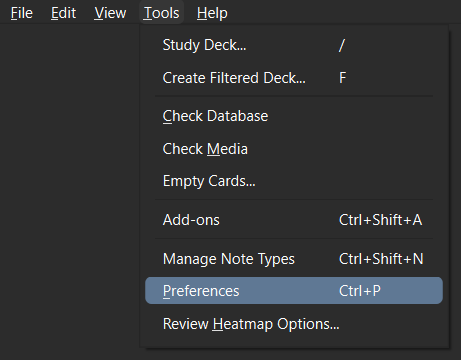
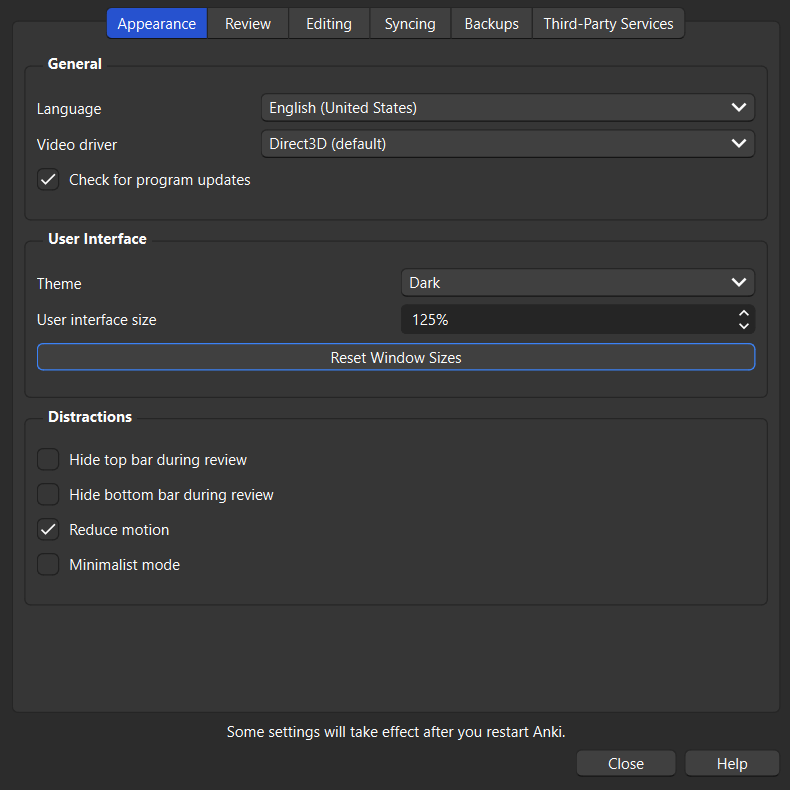
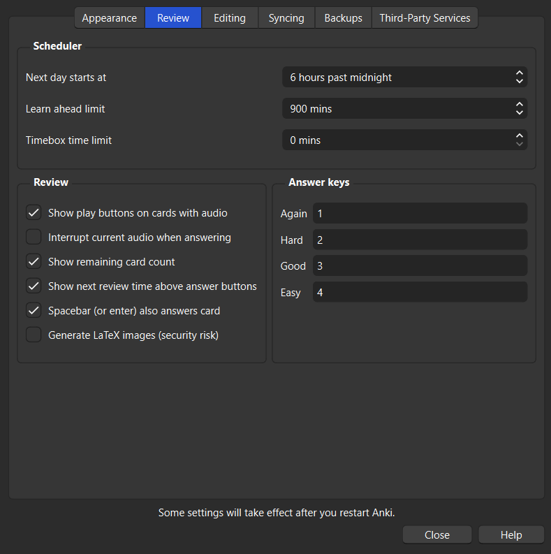
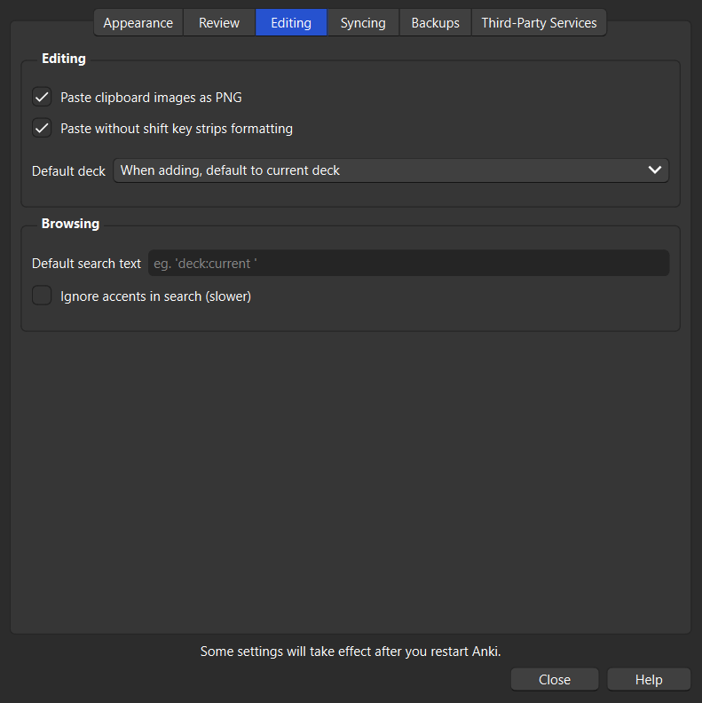
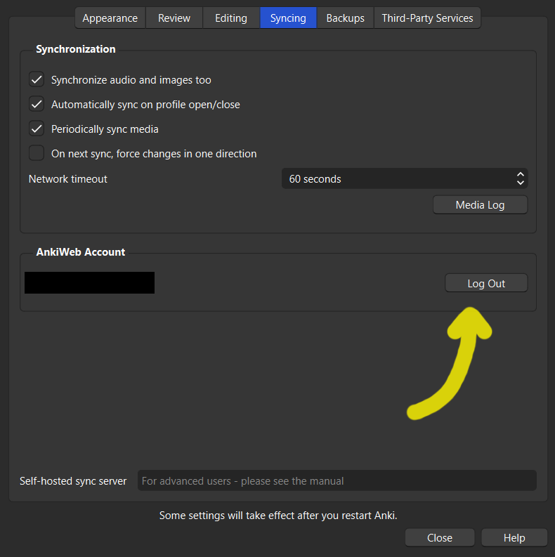
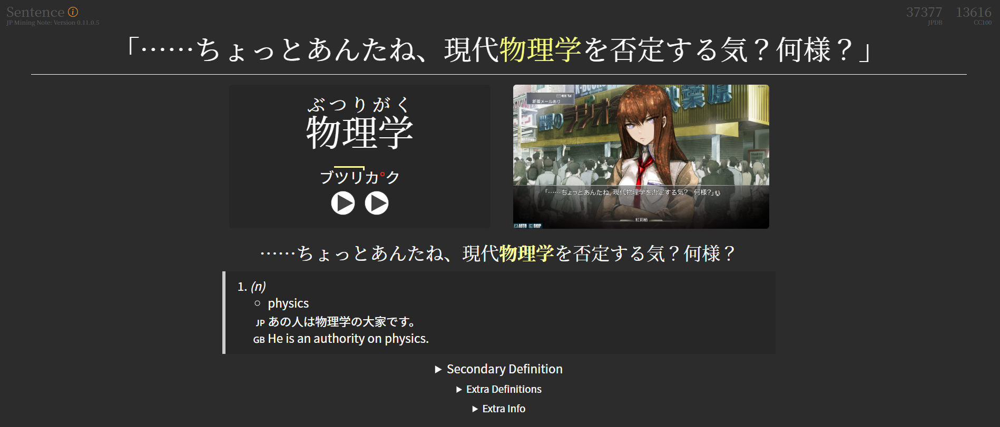
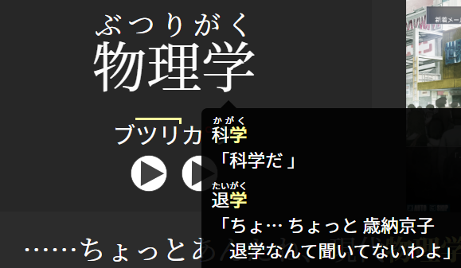
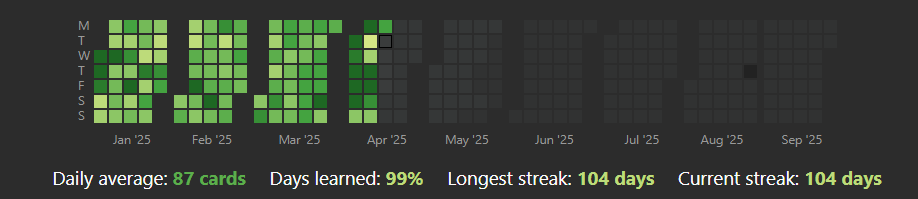

Anki Setup¶
Download¶
Get the latest version from Official Anki Download Page.
Preferences¶
Go to Tools→Preferences and set all settings as below. Configure Answer Keys to your liking.

Apperance Tab¶

Review Tab¶

Editing Tab¶

Syncing Tab¶
Log into your AnkiWeb Account on Syncing page. 
Other Tabs¶
Set remaining tabs to whatever.
Presets¶
Default Preset for Japanese:
- 10 new cards a day
- All available reviews
- New cards with 5min → 15min steps
- Failed cards with 10min → 1hour steps
- After 5 failed reviews card is suspended

Note Type¶
My favourite Anki Note Type for Japanese is jp-mining-note. You can find installation gudie here. After that you can read through Reference to understand card structure and Note Type features.
Example
You can download my sample card to see how I usually use this template. The only thing I changed is the field order to make card creation a bit easier.

One of my favourite things about this note is that you can hover over kanji and see in which your other card this kanji was used. Very helpful to make connections between cards and increase retantion rate.

Warning
Card will create a warning if you have multiple cards for the same word. I personally ignore them and don't mind having multiple cards in multiple contexts for complicated words.
Add-ons¶
Highly recommended to install listed below essential add-ons. Navigate to Tools→Add-ons, push Get Add-ons..., and type the code according to addon page. Then some of these add-ons will have Config option or separate settings button in Tools tab which you can tweak up to your liking. I leave everything at default, except Review Heatmap.
Essentiual add-ons¶
- AnkiConnect (2055492159): essential add-on to connect anki to external apps such as yomitan dictionaries
- AJT Japanese for JP Mining Note (200813220): furigana and pitch accent generator for jp-mining-note Note Type
- VOICEVOX Japanese Text To Speech Audio Generator (366960193): AI TTS generator
- Review Heatmap (1771074083): review activity visualization GitHub style
Note
I recommend to put heatmap Tools→Review Heatmap Options... in Continuous Timeline for better looks.

Optional add-ons¶
- Kanji Grid Kuuube (1610304449): learnt kanji visualization
- FSRS Helper (759844606): additional useful functionality for anki scheduler
- Advanced Browser (874215009): more features to anki browser
Setup Completed¶
Now your Anki Setup should be completed, congratulations! 
As the next setup, you can go to setting up Yomitan for quick look ups and easy card creation.
Thanks¶
- Damien Elmes and Anki Team for the best software in existence
- Shigeyuki for Anki-tan
- Aquafina-water-bottle and arbyste for jp-mining-note